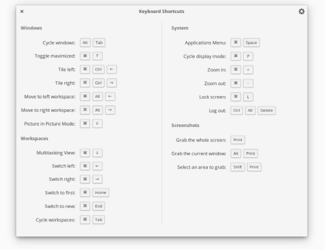
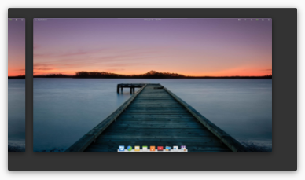
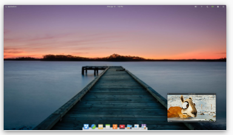
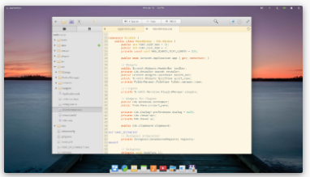

Fáciles de usar. Ideales para un uso eficiente del teclado.
elementary OS está diseñado para que sea fácil de entender y de usar para el nuevo usuario. Esto no quiere decir que sea limitado; los potentes y personalizables atajos de teclado garantizan mantenerse productivo, ya sea el primer o el enésimo día que usa elementary.
Productividad y diversión al
máximo
Eleve su productividad y concentración con la vista multitarea, el modo
minipantalla y la función No molestar. O elimine toda notificación del trabajo
mientras ve vídeos o juega.

Vista multitarea
Las áreas de trabajo le ayudan a organizar sus pendientes. Mantenga el trabajo y el ocio separados, pero accesibles con solo una pulsación.

Modo minipantalla
Trátese de una película, un juego o un proceso del terminal, el modo minipantalla le permite estar al tanto de una cosa mientras trabaja en otra.

No molestar
Apártelo todo y conserve su concentración en el trabajo, o mantenga a raya todas las notificaciones mientras mira una película. El modo No molestar interrumpe la emisión de notificaciones.